All sixteen machines visibly levitate. Patchbay is a clean low medical platform, Towline alone owns the crane/hook, Relay alone owns the open fork, and the heavy classes retain distinct bastion, artillery, workshop, and carrier silhouettes.
concept only no Meshy calls exact 4×4 class order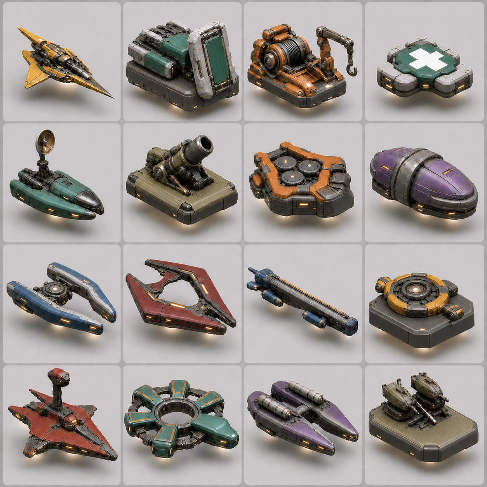
Approximately 63×63 pixels per bot. Every air gap, Patchbay's cross, and the class-specific signature hardware remain readable.
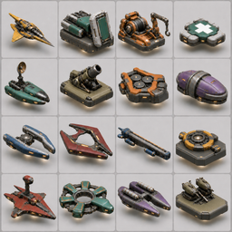
V12 is the current concept candidate. No Meshy tasks, runtime models, or locomotion manifests have changed.
Approximately 63×63 pixels per bot. Patchbay's cross remains visible, and Relay is the only unmistakable open fork.
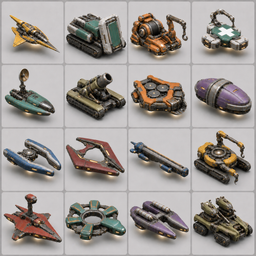
V10 fixed the medic and repeated-fork problems, but four bodies still used tracks and Patchbay/Mason retained redundant crane-like appendages.
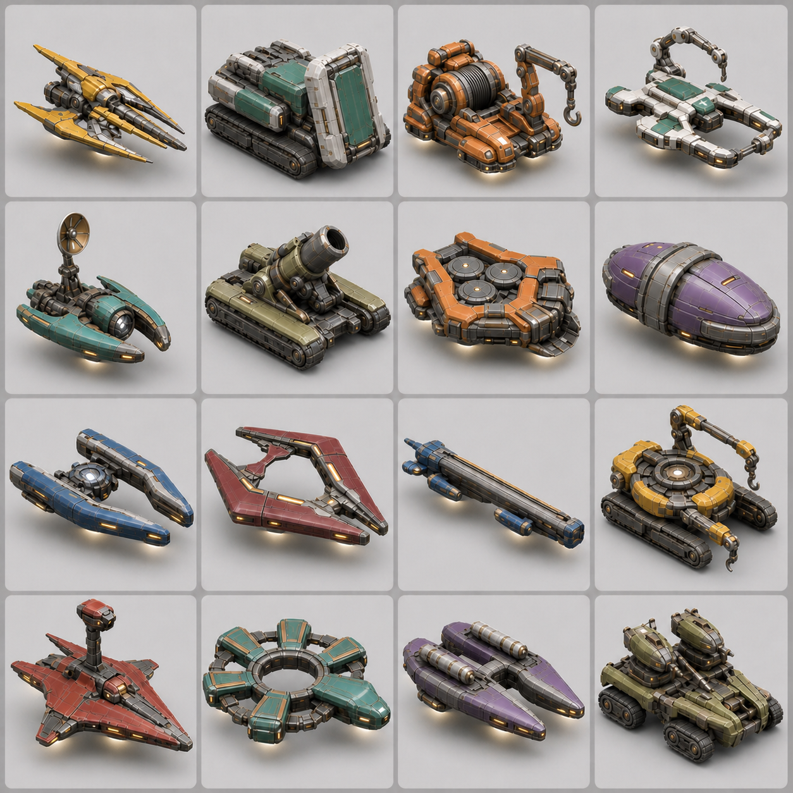
Approximately 63×63 pixels per bot. The air gap and neutral underside field cue remain visible; only Palisade, Mortar, Mason, and Nest make ground contact.
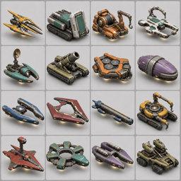
V9 established the explicit hover read, but lost Patchbay's cross and repeated the split-nose language across too many classes.
Approximately 63×63 pixels per bot. Class shape, negative space, hardware, and color survive without the dark seam network.
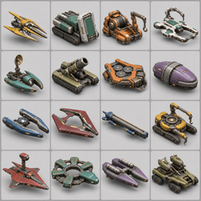
V8 established the clean surface treatment, but too many nominal hover chassis still appeared to sit directly on their shadows.
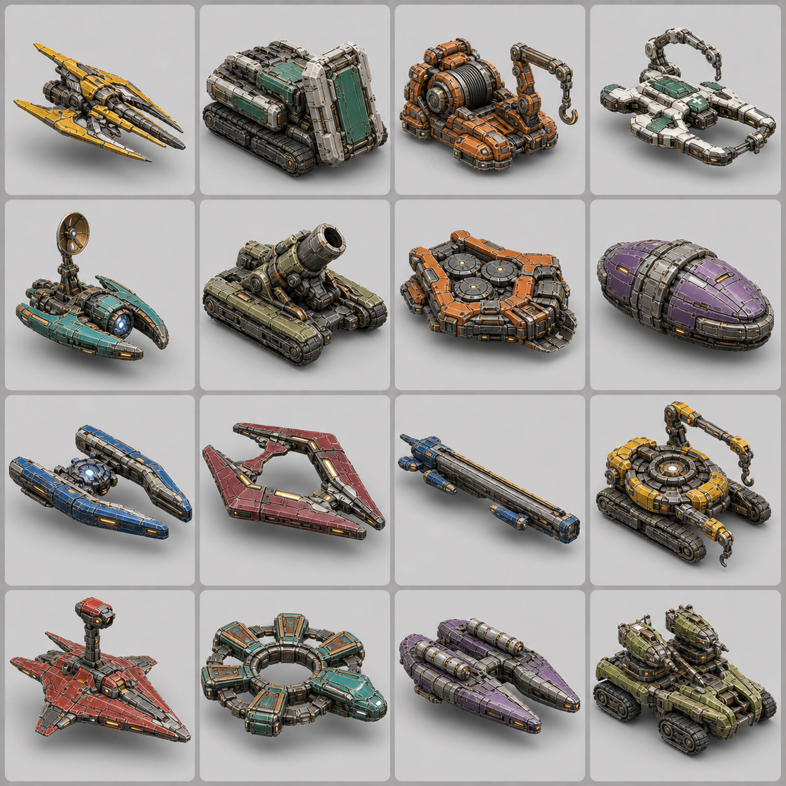
Each bot is approximately 63×63 pixels here. The outer contours and negative spaces remain distinct without relying only on color.
V7 established the approved locomotion and silhouette grammar but outlined too many secondary armor plates with dark seams.
Each bot is approximately 63×63 pixels here. Minesmith's three discs survive; Nest still needs a clearer folded-sentry read before provider work.
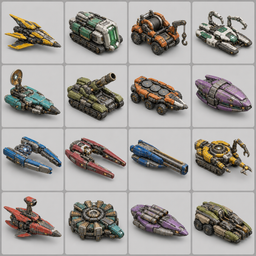
V6 established the detailed, value-balanced material bar but still made too many utility classes read as cars.
Retained as the exact geometry/material input to the v6 value correction.
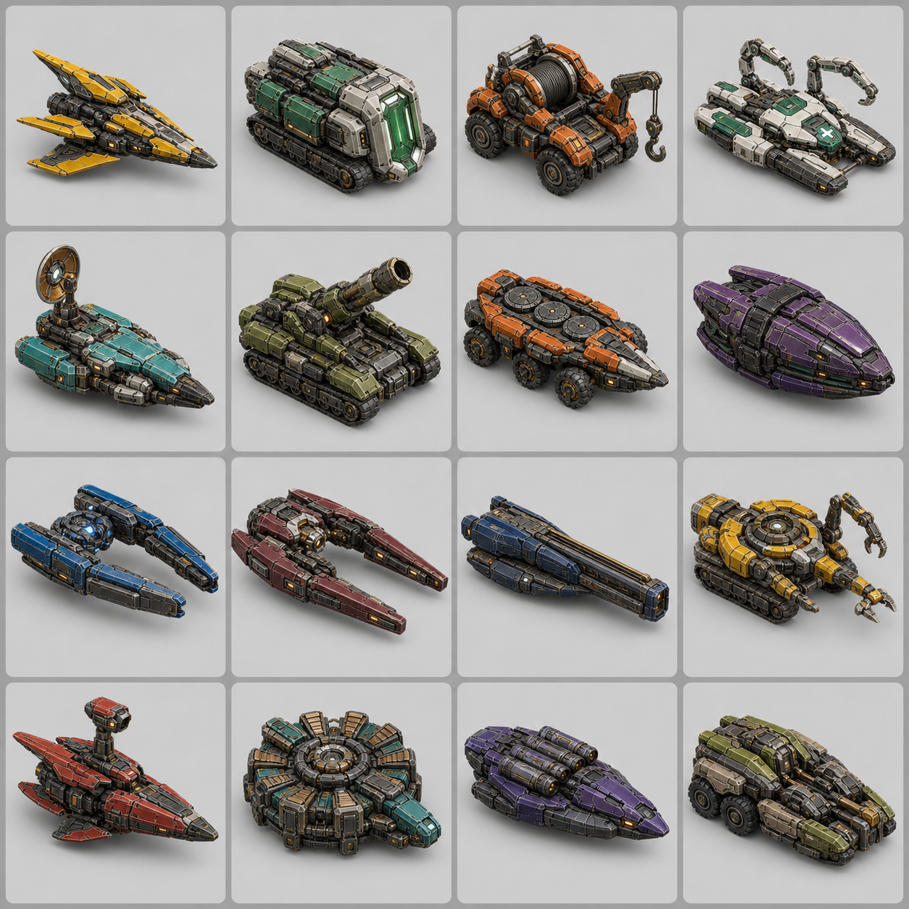
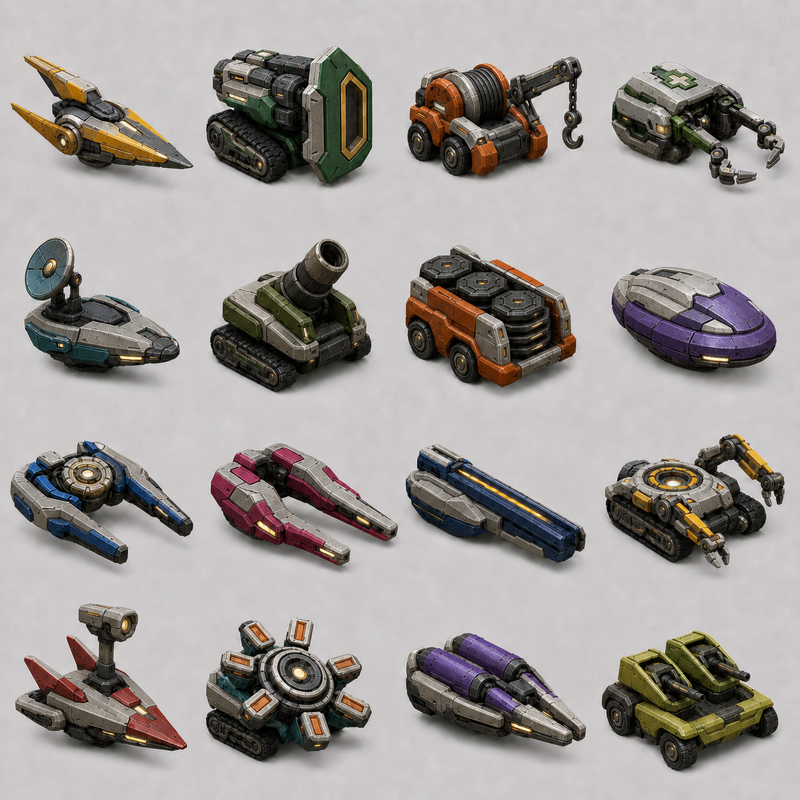
Each bot is approximately 63×63 pixels here. This is the important legibility check, not browser zoom.
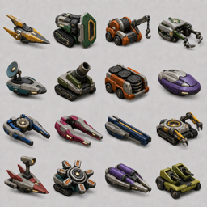
Maximum color clarity, retained to show the glossy toy-like failure mode that v4 corrects.
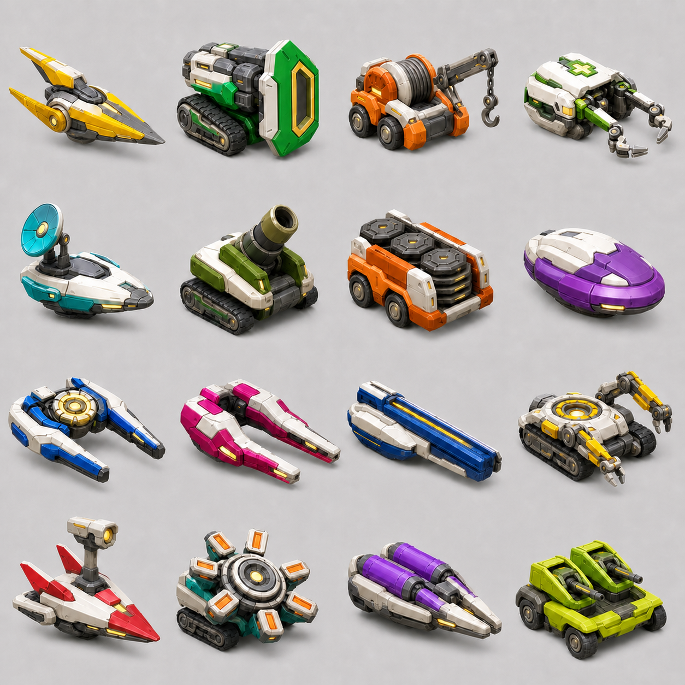
The same geometry with lower-chroma class paint and more visible shared ivory armor.
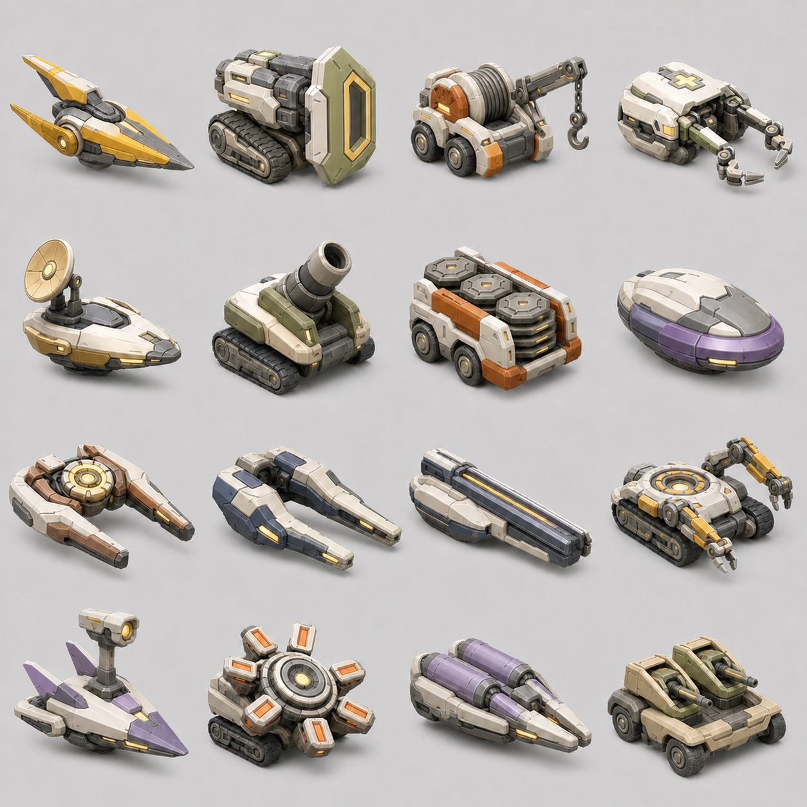
Retained for comparison; this pass proved the brighter material language but made the fleet too uniform.

The soft studio contact shadows are review-only. Approval starts a separate per-bot isolation pass; only clean shadowless 1040+ px squares would be eligible for Meshy.